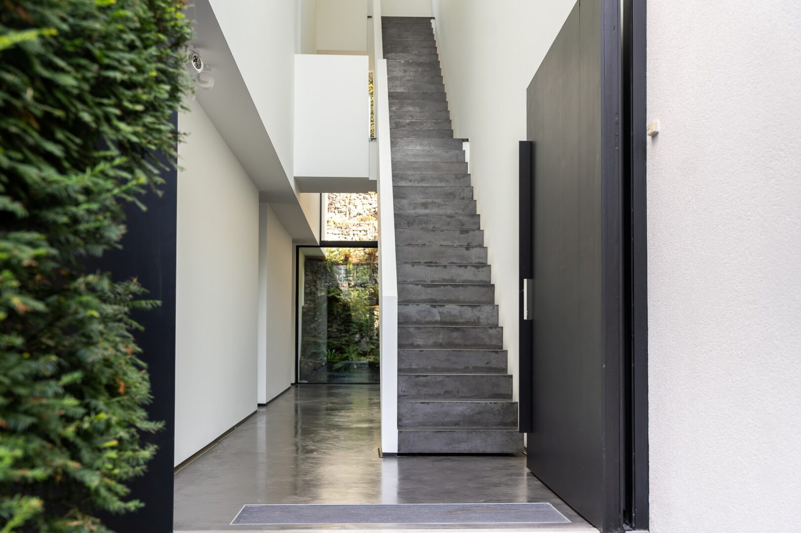
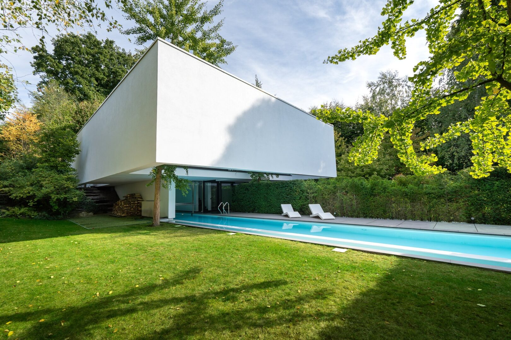
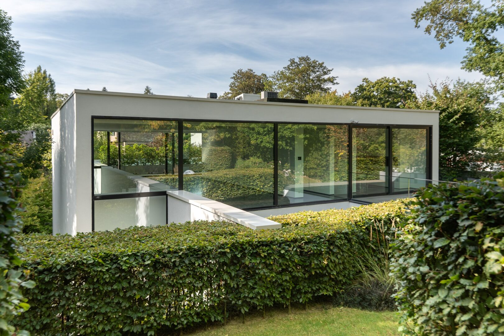
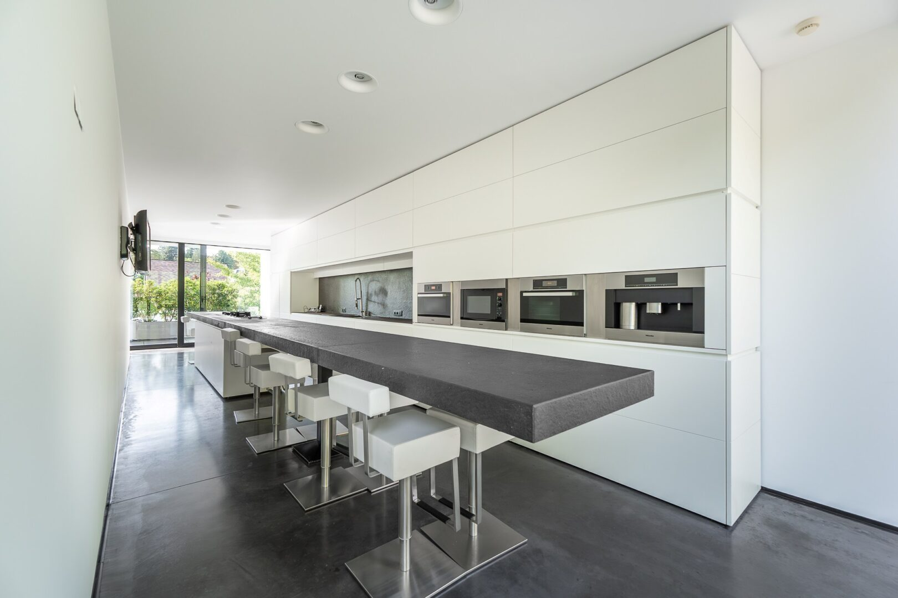
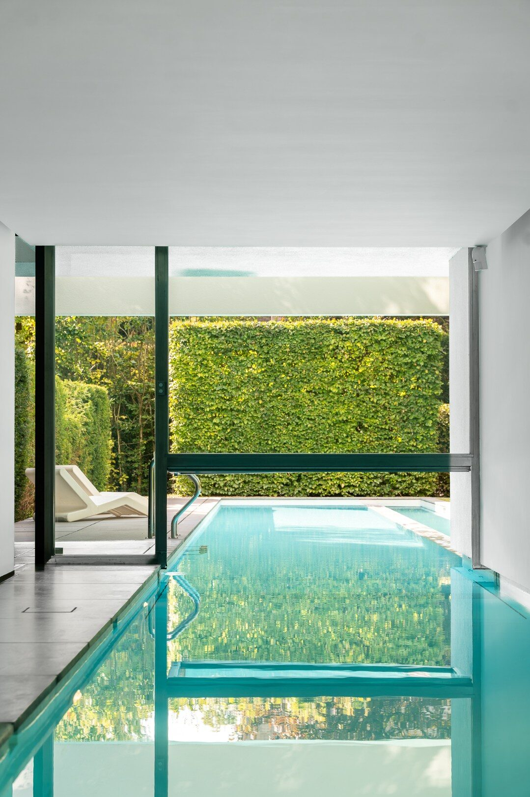
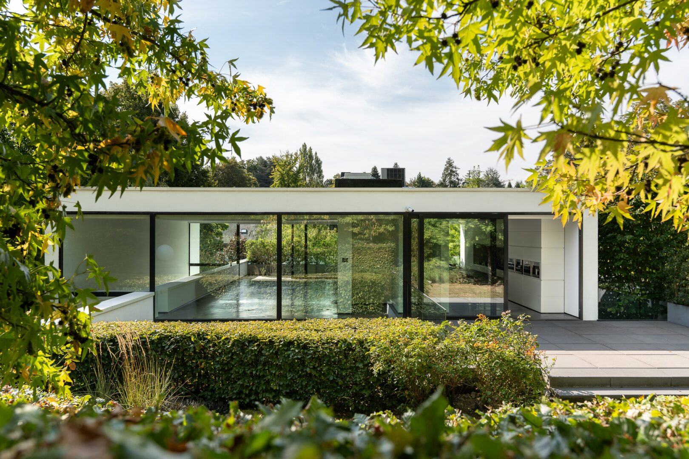

01 / 09
Le séjour
Pièce traversante, plafond toute hauteur, ouverte sur le jardin par une baie continue.

Maison Erpicum. 622 m² habitables, posés sur 1.900 m² de terrain, en lisière de la quartier Prince d'Orange.

Une lame de pierre claire en porte-à-faux marque le seuil ; un cheminement minéral guide jusqu'à l'entrée principale.
Une œuvre contemporaine, pensée comme un manifeste.
Conçue comme un manifeste contemporain, la Maison Erpicum joue sur la précision des lignes et la respiration des plans. Chaque ouverture cadre la nature alentour : la lumière n'est pas invitée, elle est composée.
Les volumes s'ouvrent sur un jardin paysager de 2.000 m², traversés par une circulation centrale qui guide le regard jusqu'à la canopée de la quartier Prince d'Orange.
« Ici, l'architecture ne se montre pas. Elle se traverse. » — Note de l'architecte



Hauteurs sous plafond doublées, ouvertures cadrées, circulation traversante : chaque volume capte la lumière et la redistribue.
Faites défiler — la villa se déploie horizontalement.

Pièce traversante, plafond toute hauteur, ouverte sur le jardin par une baie continue.
Plan de travail monolithique, équipements professionnels, ouverture sur la salle à manger.

Dalle de pierre suspendue au-dessus du bassin, prolongement direct du séjour.

Chambre, dressing, salle de bains et terrasse privée : un appartement dans l'appartement.

Volume calme, lumière nord, pensé pour la concentration et la lecture.

Salle dédiée, miroir mural, sol technique, vue directe sur le jardin.
Pièce sombre, traitement acoustique, projection grande diagonale.
2.000 m² paysagés, essences locales, en dialogue avec la quartier Prince d'Orange.

Bassin extérieur dans l'axe du séjour, margelles minérales, eau comme un miroir.
Pierre, chêne brossé, métal patiné : les matières sont peu nombreuses, choisies pour vieillir avec grâce.
Cliquez sur une image pour l'ouvrir en plein écran.

2.000 m² paysagés en dialogue avec la forêt. Essences locales, bassin miroir, intimité totale.
Posée dans un clos résidentiel privé, à quelques minutes seulement du centre de Bruxelles, la Maison Erpicum profite d'une adresse rare : la quiétude d'un environnement boisé, la proximité immédiate des écoles internationales, et le calme d'une commune préservée.
Sur rendez-vous uniquement. Notre équipe vous accompagne pour une découverte confidentielle de la villa.